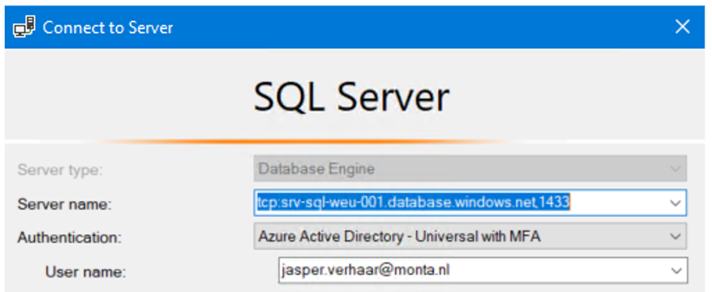
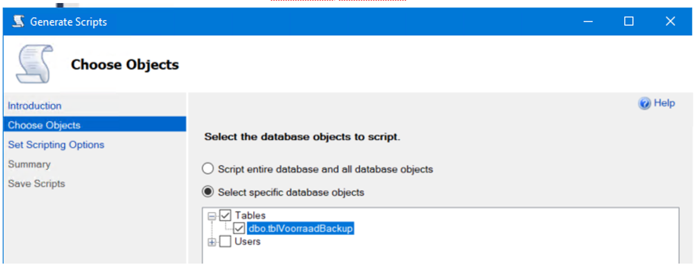

Restore Azure SQL database naar on premise
Handleiding Restore Azure SQL database naar on-premise
Een restore van de database “db-voorraad-001” werkt niet via de SQL Studio Manager omdat deze een Memory exception geeft door het grote aantal regels.
Daarom moet voor de restore het command-line tool sqlcmd gebruikt worden.
Onderstaande handleiding gaat uit van de productieomgeving:
Server : tcp:srv-sql-weu-001.database.windows.net,1433
Database : db-vooraad-001
Aantal regels : 450000 (op 6-3-2022)
Maak als volgt connectie met SQL Management Studio:

Export data
Tabel met data aanmaken voor import in een andere database
RM Source database, Generate scripts, Selecteer specifieke tabel.

Kies dan “Save as script file” en klik op “Advanced”.
Kies bij “Types of data to script” voor “Schema en data”.

Dit levert een query op die zowel de tabel aanmaakt als de data er inzet.
Je hebt nu de tabel met data in de gewenste database.
Voorbeeld van een dergelijke query :
SET ANSI_NULLS ON
GO
SET QUOTED_IDENTIFIER ON
GO
CREATE TABLE [dbo].[tbltest2](
[ID] [smallint] NULL,[Naam] [nchar](10) NULL) ON [PRIMARY]
GO
INSERT [dbo].[tbltest2] ([ID], [Naam]) VALUES (1, N'Jasper ')
GO
Tabel (zonder data) aanmaken voor import in een andere database
Zie "Tabel met data aanmaken in andere database" maar dan met "Schema
only".
Dit levert een query op die de tabel aanmaakt.
Maak een nieuw query aan op de gewenste database en voer bovenstaande
query uit.
Je hebt nu een lege tabel in de nieuwe database.
Alleen data kopiëren van de ene tabel naar de andere
Zie "Tabel met data aanmaken in andere database" maar kies dan voor Data
only.
Maak een nieuw query aan op de gewenste database en voer bovenstaande
query uit.
Voorwaarde is wel dat een lege tabel al eerder is aangemaakt.
Import data
Tabel met data restoren in een andere database via SQL Management Studio
Maak een nieuw query aan op de gewenste database (kan zowel on-premise zijn als in SQL Azure) en voer de query uit die met de export gemaakt is.
Tabel met data restoren in een andere database via sqlcmd
sql server - How do you import a large MS SQL .sql file? - Stack Overflow
sqlcmd -S [servername] -d [databasename] -i [scriptfilename] -a 32767
Bijvoorbeeld vanaf de MP-MGMT12:
sqlcmd -S MP-DEV02\DEVSQLSERVER -d Monta_Backend_Dev -i “C:\Scripts\Script om tblvoorraad aan te maken\script.sql” -a 32767
of
sqlcmd -S MP-SQL04\TEST_BACKEND -d Monta_Backend -i “C:\Scripts\Script om tblvoorraad aan te maken\script.sql” -a 32767
Een test-restore van ruim 280000 regels duurde slechts 3 minuten. Een test-restore van ruim 450000 regels duurde slechts 5 minuten.